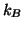
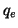
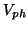
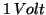
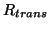
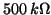
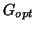
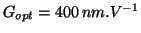
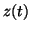

Another useful application of the virtual AFM is the realistic evaluation of the limitations imposed by the noise generated by the components of the system. Sources of noise in beam deflection AFM have been discussed in [34]. The major ones are [35]:
The thermal noise of the cantilever [36,32],
whose power spectral density reads:

. In virtual AFM, this noise is implemented at left in equation 22 as a noise force.
The amplitude shot noise [37,35]
of one photodiode quadrant detector:
with the elementary charge

, the photodiode voltage
(
in our experimental conditions), the transimpedance resistor
(
[21]).
is a factor to convert the cantilever oscillation in volts coming from the photodiode in nanometers. It depends of the geometrical design of the optical detection but also of the kind of light source used (Laser, LED, ...). In our case, we measured
.
Finally, the Johnson noise of the resistor of the current-voltage
converter that monitors the photodiodes:
The amplitude shot noise and Johnson noise are both used as amplitude noises inside

the vertical displacement of the cantilever coming from the photodiode signal.